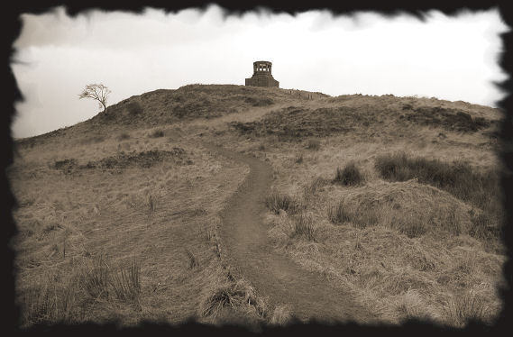
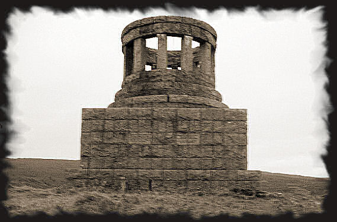
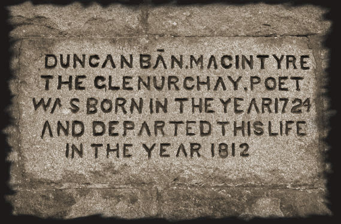

"My blessing with the Foxes dwell
For that they hunt the sheep so well.
Ill fa' the sheep, a greyfaced nation
That swept our hills with desolation."
In his poem Song of the Foxes, bard Duncan Ban MacIntyre pays tribute to the foxes, those predators of the sheep who destroy the much-loved land. The fox’s cunning and sly nature was highly admired by the Celts and the druids. For them, the sheep was a symbol of domesticity and civilisation, as opposed to the fox, which represented the spirit of the wilder side of life.
The Duncan Ban MacIntyre Memorial is situated on the old military route that links Inveraray with Dalmally.

It was built in 1859 with public donations, and was restored in 2005.

Donnchadh Bàn Mac an t-Saoir (more commonly Duncan Ban MacIntyre) is a famous Gaelic poet.
